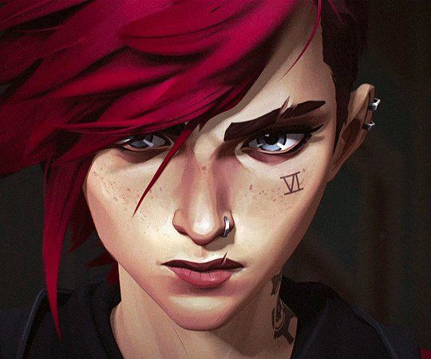

ATO I
O primeiro ato é focado em dois cenários e óticas diferentes. Em Zaun, temos Violet e Powder, ou respectivamente: Vi e Jinx. Quem acompanha o jogo, vai encontrar as personagens em estágios inicias, onde conhecemos muito melhor o pano de fundo da história delas.
Já em Piltover, temos Jayce, Caitlyn e Viktor, que também estão vivendo seus primeiros dias em Runeterra.
Os de baixo e os de cima enfrentam problemas totalmente diferentes que, aparentemente, em pouco tempo irão entrar em conflito.
Logo de princípio, a série já mostra um ritmo ótimo. Ela empolga, prende, entristece, alegra e meche com suas emoções em níveis equilibrados que agradam.
ATO II
Aqui, temos desenvolvimento de personagens, bem como da trama focada em Piltover e Zaun. Respostas e conclusões, no entanto, são em geral deixadas para depois, algo que, nesse caso, não é um problema.
É preciso olhar para o Ato 2 pelo que ele é: a parte intermediária de uma história que ainda será concluída.
ATO III

O primeiro episódio do Ato 3 traz algumas das cenas mais marcantes de toda a série. Depois de separar vários personagens para que pudessem crescer cada um à sua maneira, a última parte apresenta as reuniões, e as consequências dos caminhos diferentes que cada um seguiu.
O terceiro ato é, então, finalizado de forma bombástica, com personagens que percebem seus erros, e outros que escolhem novos caminhos em busca da paz — ou da destruição. Muito fica em aberto, e há potencial para que novas tramas, histórias e personagens (conhecidos e inteiramente novos) sejam apresentados no futuro. Além disso, a parte final se destaca por abrir os horizontes para um pouco além, introduzindo Noxus e dando a deixa para que mais de Runeterra seja mostrado — seja em Arcane ou em outras produções no mesmo universo.